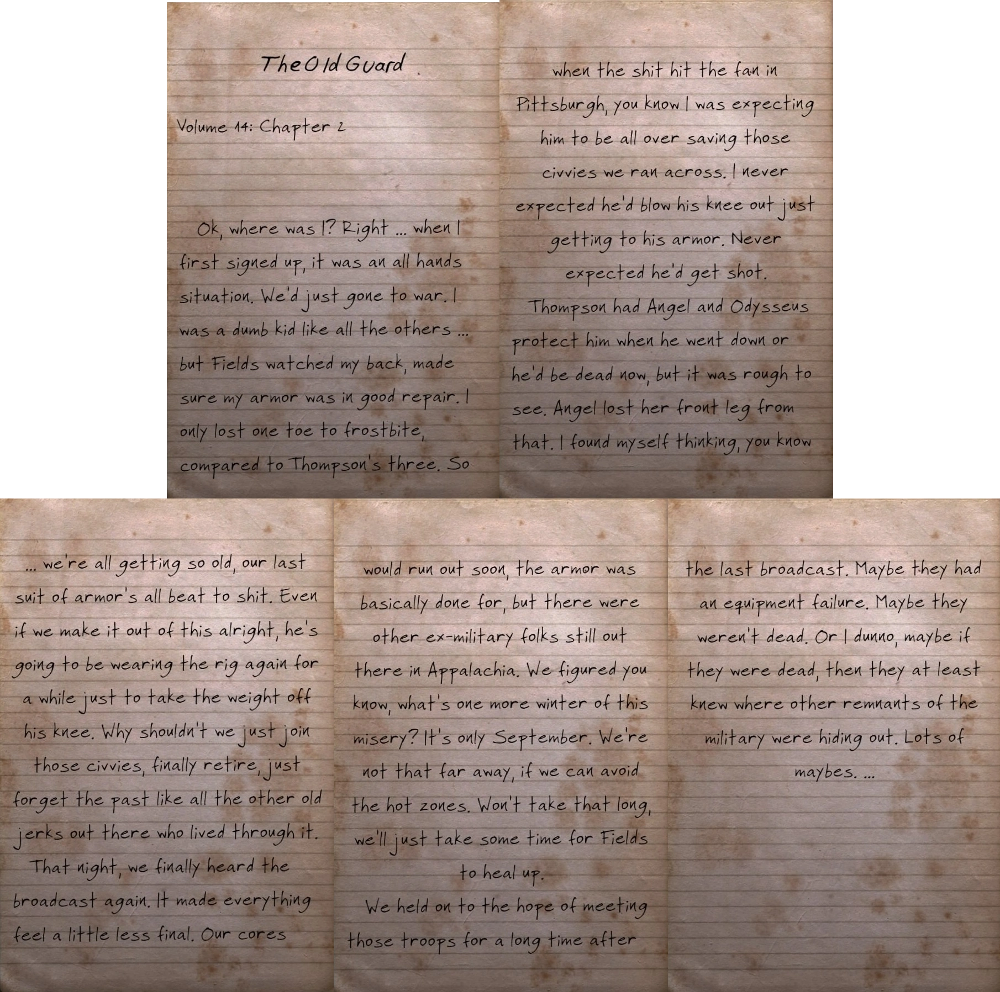
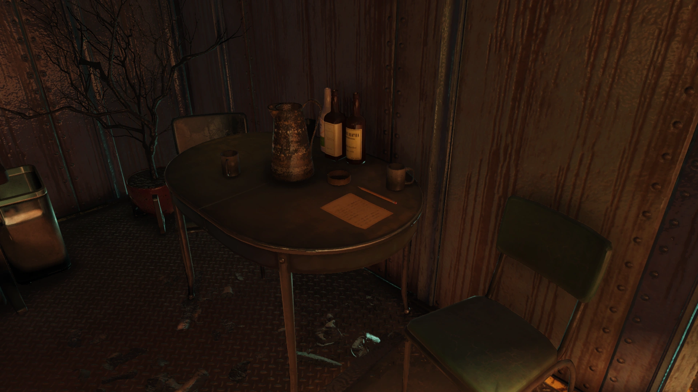

Oliver Fields
オリバー・フィールズ大尉
概要
オリバー・フィールズ大尉は、アパラチアで活動する元米陸軍将校です。
Fallout 76のアップデート「Wastelanders」にのみ登場します。
背景
フィールズ大尉は、部下のフレッド・ラドクリフ軍曹とトンプソン軍曹と共に、中米戦争の頃から戦い続けてきました。
ラドクリフはフィールズの指揮のおかげで生き延びられたと述べており、大尉には本当に退役が必要だとも言っています——「見た目ほど若くないんだ。あれはずっと食べてきたジャンクフードの保存料のおかげだ」と。
3人はフォートノックスの金塊備蓄をVault 79に移送する任務を担当した元々の軍事チームの一員でした。
しかし、大戦のためにVaultが閉鎖された際、彼らは外に取り残されてしまいました。
それでもフィールズは筋金入りの愛国者であり、アメリカが戦争で滅びたとは信じようとしませんでした。
「戦前の歴史を少しでも知らないのか？ 俺たちアメリカは常に火の中で鍛えられてきた。今回はちょっと焼けすぎたかもしれないが、終わりだとは信じられない」と語っています。
パワーアーマーを装備した彼らは何年もウエイストランドを放浪し、常にアパラチアの近くに留まりながら、安全が確認されてから戻ることにしていました。
しかしアパラチアに到着する前にピッツバーグに辿り着き、そこで民間人を救おうとしました。
しかしパワーアーマーに乗り込もうとしたフィールズは撃たれて負傷し、チームは軍用犬のエンジェルとオデュッセウスのおかげでかろうじて脱出できました。
エンジェルはこの戦闘で前足を失いました。
彼らは軍人としての生活を諦めることも考えましたが、他の軍の残存勢力からの無線放送を再び聞き、アパラチアへの帰還を決意しました。
最後の軍用犬であるラッキー二等兵と共に、ピッツバーグからアパラチアに向かう入植者たちを追跡・観察しながら移動しました。
ウエストバージニアに到着後、チームはVault 76の住人と略奪されたバンカーで会うことに同意しました。
プレイヤーとの関わり
クエスト
- Duty Calls: フィールズは略奪されたバンカーでVault居住者と会うことに同意します。
最初はVault 79の金塊を強奪する計画に疑念を抱き否定的ですが、チームと相談した後、ラドクリフ軍曹を強奪に参加させることに同意します。
装備
- 汚れた陸軍戦闘服
備考
フィールズはアパラチアが北方の地域よりもはるかに恵まれていると主張しています。
「俺たちは北の方からずっと南下してきたんだ。なぜそんなに時間がかかったかって聞く前に、アパラチアでの日常をよく見てくれ。ここはいい所だ。お前らは恵まれすぎて、うちの母ちゃんをここで引退させたいくらいだ。巨大コウモリ？ めそめそ言うな」
発見できるメモ
The Old Guard
第14巻：第2章
さて、どこまで話したっけ？ そうだ……最初に志願した時は総動員態勢だった。
戦争が始まったばかりの頃だ。
俺は他の連中と同じでバカなガキだったが……フィールズが俺の背中を守ってくれた。
アーマーの整備もしっかりやってくれた。
凍傷で失った指は1本だけだ——トンプソンの3本に比べればな。
だからピッツバーグで事態が最悪になった時も、あいつが民間人を助けに飛び出すのは分かっていた。
まさかアーマーに乗り込むだけで膝を壊すとは思わなかった。
まさか撃たれるとも思わなかった。
トンプソンがエンジェルとオデュッセウスにフィールズの護衛をさせなかったら、今頃死んでいただろう。
エンジェルはあの戦闘で前足を失った。
見ていてつらかった。
俺は考えたよ——俺たちはみんな年を取りすぎた。
最後のアーマーもボロボロだ。
たとえ無事に切り抜けたとしても、あいつは膝の負担を軽くするためにしばらくリグを着て歩くことになる。
俺たちもあの民間人たちに合流して、引退して、過去を忘れた方がいいんじゃないか——生き延びた他の老いぼれ共のように。
その夜、ようやくまたあの放送を聞いた。
すべてが少しだけ、まだ終わりじゃないような気がした。
フュージョン・コアももうすぐ空だし、アーマーも実質終わっている。
だがアパラチアにはまだ他の元軍人たちがいる。
もうひと冬の苦しみくらい何だ？ まだ9月だ。
そう遠くない。ホットゾーンを避ければ、そう時間はかからない。
フィールズが回復するまで少し休めばいい。
最後の放送の後も、俺たちは長い間あの部隊に会えるという希望を持ち続けた。
機器の故障かもしれない。
死んでないかもしれない。
あるいは、死んでいたとしても、少なくとも他の軍の残存勢力がどこに隠れているか知っているかもしれない。
「かもしれない」だらけだ……。

舞台裏
フィールズ大尉、トンプソン軍曹、ラドクリフ軍曹、ラッキー二等兵、オデュッセウス、エンジェルは全員「The Old Guard」のメンバーとして識別されています。
彼らの存在は、現実世界の第947憲兵分遣隊——米陸軍第4大隊、第3合衆国歩兵連隊（通称「The Old Guard」）の一部——へのオマージュです。
この部隊はアメリカ本土で2番目に大きな軍用犬部隊を擁し、シークレットサービスと緊密に連携しています。
これはFallout 76における彼らの役割と一致しています。
登場作品
オリバー・フィールズはFallout 76のアップデート「Wastelanders」にのみ登場します。
ギャラリー

フィールズ大尉、Wastelandersで初めて会った時の印象がすごく良かったです。
金塊強奪の計画を聞いて「なぜアメリカの金塊備蓄を盗もうとしてるんだ？」と開口一番にぶちまけてくるところが、この人の人となりをよく表してますよね。
核戦争で国が滅んでも、金塊護送の任務を放棄しない筋金入りの愛国者——でもそこに嫌味がないんですよ。
「俺たちアメリカは常に火の中で鍛えられてきた」っていう台詞に、彼なりの信念がしっかり感じられます。
ラドクリフ軍曹のメモ「The Old Guard」が本当に味わい深い。
ピッツバーグでアーマーに乗り込もうとしただけで膝を壊し、さらに撃たれるフィールズ——もう限界なんですよね、体力も装備も。
軍用犬のエンジェルが前足を失いながらフィールズを守ったエピソードは、読んでいて胸が苦しくなりました。
「俺たちはみんな年を取りすぎた。最後のアーマーもボロボロだ」——この一文に、何十年も戦い続けてきた兵士たちの疲弊が凝縮されています。
そしてB.O.S.の放送を聞いて「もうひと冬の苦しみくらい何だ？」と再び立ち上がるところ！
フュージョン・コアもほぼ空、アーマーも終わり、体はボロボロ。
それでも「かもしれない」の希望だけで歩き続ける。
この人たちの物語は、Wastelandersの中でも一番「兵士」を感じさせるエピソードだと思います。
現実の「The Old Guard」——アーリントン墓地の護衛で知られる名誉ある部隊——とのオマージュも素晴らしい。
軍用犬部隊を擁し、シークレットサービスと連携するという設定まで一致させているのは、開発チームの深いリサーチが感じられますね。
「巨大コウモリ？ めそめそ言うな」も最高ですw
アパラチアの住人としては確かにスコーチビーストは脅威ですが、ピッツバーグから命からがら逃げてきた兵士からしたら「まだマシ」なんでしょうね〜
This article was created by translating and editing Oliver Fields from Nukapedia: The Fallout Wiki.
Licensed under the Creative Commons Attribution-Share Alike License (CC BY-SA 3.0).
コミュニティ維持のため、寄付を受け付けております。
> COMMENTS